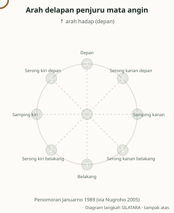
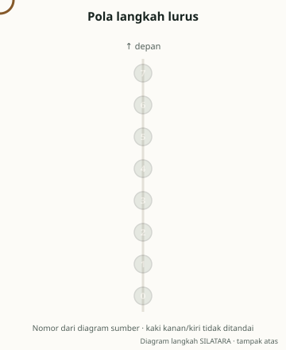
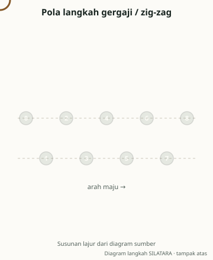

mv.psdp.arah-delapan-penjuruArah delapan penjuru mata angin

mv.psdp.elak-atasElak Atas
Gerak melompat; tidak dianimasikan sampai teknik pendaratan aman dikonfirmasi instruktur.
mv.psdp.elak-bawahElak bawah

mv.psdp.elak-belakangElak belakang
mv.psdp.elak-sampingElak samping

mv.psdp.hindaran-angkat-kakiHindaran Angkat Kaki
Tinggi angkatan dan sikap badan tidak dijelaskan; gerakan bergantung pada sapuan lawan.
mv.psdp.hindaran-hadapHindaran hadap

mv.psdp.hindaran-silangHindaran Silang
Arah silang tidak disebut; butuh demonstrasi.
mv.psdp.hindaran-sisiHindaran Sisi
Arah langkah dan perubahan orientasi badan relatif lawan butuh demonstrasi; uraian hanya menyebut hasil akhirnya.
mv.psdp.kuda-kuda-belakangKuda-kuda belakang

mv.psdp.kuda-kuda-depanKuda-kuda depan
mv.psdp.kuda-kuda-menyampingKuda-kuda menyamping kiri/kanan
mv.psdp.kuda-kuda-sampingKuda-kuda samping
mv.psdp.kuda-kuda-silang-belakangKuda-kuda silang belakang
mv.psdp.kuda-kuda-silang-depanKuda-kuda silang depan
mv.psdp.kuda-kuda-tengahKuda-kuda tengah
mv.psdp.langkah-angkatanLangkah angkatan (tinggi & rendah)
mv.psdp.langkah-geseranLangkah geseran

mv.psdp.langkah-ingsutanLangkah Ingsutan
Urutan poros tumit/ujung kaki dan arah perpindahan perlu diperagakan instruktur; menebak pola akan mengarang koreografi.
mv.psdp.langkah-lompatanLangkah Lompatan / Loncatan
Teknik tolakan & pendaratan aman (tekukan lutut saat mendarat, jarak) tidak dijelaskan sumber; tidak dianimasikan agar tidak mendorong latihan lompat tanpa pengawasan.
mv.psdp.langkah-putaranLangkah Putaran
Besar sudut putar, kaki poros, dan arah 'ke luar' perlu dikonfirmasi dengan demonstrasi instruktur; rotasi kaki terhadap lantai butuh tampilan atas + samping.
mv.psdp.pola-langkah-huruf-sPola Langkah Huruf S
Diagram huruf S perlu disalin ulang dari sumber cetak atau dari instruktur.
mv.psdp.pola-langkah-ladamPola Langkah Ladam / U
Diagram nomor langkah ladam tunggal/rangkap harus disalin ulang dari sumber cetak (atau dari instruktur) — teks ekstraksi PDF tidak memuat posisi yang dapat diandalkan.
mv.psdp.pola-langkah-lurusPola langkah lurus

mv.psdp.pola-langkah-segiempatPola Langkah Segiempat
Diagram segiempat lurus/potong perlu disalin ulang dari sumber cetak atau dari instruktur.
mv.psdp.pola-langkah-segitigaPola Langkah Segitiga
Diagram segitiga tunggal/rangkap perlu disalin ulang dari sumber cetak atau dari instruktur.
mv.psdp.pola-langkah-zigzagPola langkah gergaji / zig-zag

mv.psdp.sikap-duduk-biasaSikap Duduk
Arah dan bentuk tekukan kaki tidak dijelaskan; butuh referensi visual berizin.
mv.psdp.sikap-duduk-sempokSikap Sempok / Depok
Bentuk lipatan kaki pada sempok dan cara masuk/keluar posisi perlu foto/sketsa referensi berizin atau demonstrasi instruktur; tampilan 2D satu sudut tidak cukup.
mv.psdp.sikap-duduk-silaSikap Sila
Bentuk lipatan kaki perlu referensi visual berizin; perbedaan dengan sempok harus dikonfirmasi instruktur.
mv.psdp.sikap-duduk-simpuhSikap Simpuh
Sumber tidak menjelaskan apakah pinggul duduk di atas tumit; animasi akan memaksakan satu tafsir — butuh konfirmasi instruktur.
mv.psdp.sikap-duduk-trapsilaSikap Trapsila
Posisi kaki dalam/luar butuh referensi tiga dimensi; tampilan 2D tidak memadai tanpa sketsa berizin.
mv.psdp.sikap-istirahatSikap istirahat

mv.psdp.sikap-pasang-1Sikap pasang 1
mv.psdp.sikap-pasang-2Sikap Pasang 2
Rotasi badan 45° adalah gerak tiga dimensi; rig 2D satu sudut tidak dapat memperlihatkannya dengan benar. Butuh rig 3/4 atau dua tampilan + konfirmasi instruktur.
mv.psdp.sikap-pasang-3Sikap Pasang 3
Tarikan 'serong' melibatkan arah diagonal di lantai; butuh tampilan atas atau 3/4 dan sudut yang dikonfirmasi instruktur.
mv.psdp.sikap-pasang-4Sikap pasang 4
mv.psdp.sikap-pasang-5Sikap Pasang 5
Kombinasi langkah ke depan, silang belakang, dan pandangan menyamping tidak dapat dibaca dari satu sudut 2D tanpa ambigu; butuh sisi pandang yang dikonfirmasi instruktur.
mv.psdp.sikap-pasang-6Sikap pasang 6
mv.psdp.sikap-pasang-7Sikap Pasang 7
Arah silang relatif terhadap badan yang menyamping tidak dapat ditentukan dari teks; butuh sketsa berizin atau demonstrasi.
mv.psdp.sikap-pasang-8Sikap pasang 8
mv.psdp.sikap-pemusatan-diriSikap berdoa / pemusatan diri
mv.psdp.sikap-tegakSikap tegak 1–4
